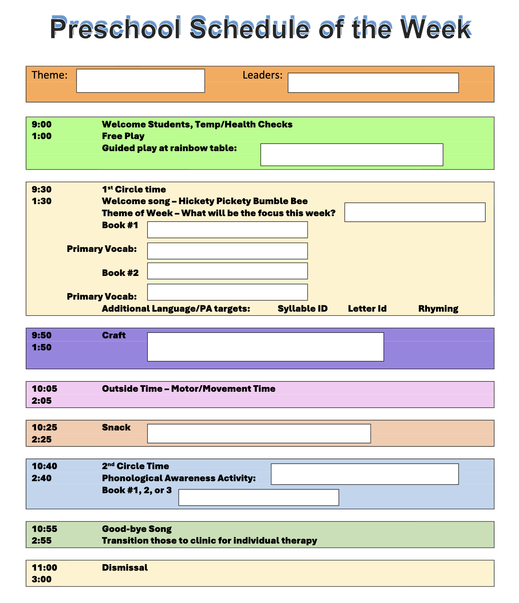
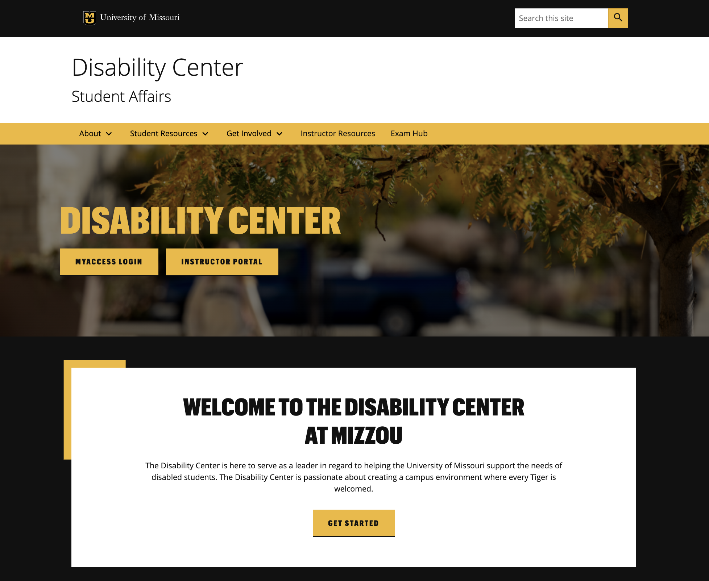
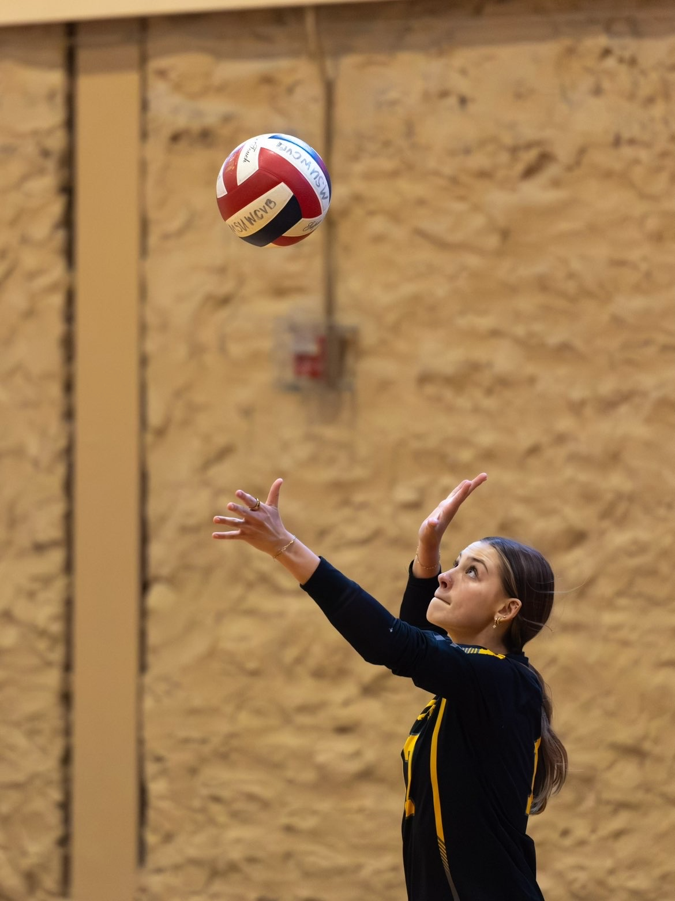

Experience
| Experience | Type | Role | Timeframe |
|---|---|---|---|
| Robert G. Combs Language Preschool | Clinical | Undergraduate Clinician | Summer 2026 |
| MU Disability Center | Employment | Student Office Assistant | January 2025–Present |
| Mizzou Women's Club Volleyball | Extracurricular | Defensive Specialist/Captain | January 2026–Present |
Clinical Apprenticeship-SLHS 4945
Robert G. Combs Language Preschool
From June–July 2026, I participated in a clinical apprenticeship at the MU Robert G. Combs Language Preschool. I served as an undergraduate clinician and was assigned two children at the beginning of the semester—one with a phonological disorder and the other with childhood apraxia of speech (CAS). Each preschool session, the class followed a designated schedule incorporating speech, language, and phonological awareness activities. During the preschool day, I implemented therapeutic strategies such as verbal and visual cues, recasting, expansion, extension, self-talk, and parallel talk. Throughout the apprenticeship, I completed multiple forms of documentation, such as parent notes and SOAP (Subjective, Objective, Analysis, Plan) notes. When documenting my assigned preschoolers’ progress, I gained first-hand experience with informal assessment tools, including Westby’s Play Scale. By the end of the summer semester, I earned 24 hours of supervised clinical experience.
Reflection
I am beyond grateful to have participated in this clinical apprenticeship, as the preschool gave me a whole new perspective on speech-language pathology. I was able to take what I had spent the past two years learning in my classes and apply my knowledge in a hands-on setting. I gained confidence in many areas, including my understanding of disorders, therapeutic strategies, assessments, and documentation. Most importantly, my passion for helping others communicate has only grown stronger through this experience. I am so thankful to have found a career path that I truly love and am excited to continue pursuing.

Student Office Assistant
MU Disability Center
I began my position as a Student Office Assistant at the University of Missouri Disability Center in January 2025. The Disability Center provides various accommodations to help ensure students with disabilities have equal access to educational opportunities. As a Student Office Assistant, I serve as a primary point of contact for students who are interested in accommodations, in the midst of the accommodation process, or already established with our office. A few of my everyday tasks include emailing students about their applications, scheduling students with their assigned Access Advisor, coordinating schedules, and providing general support. As of August 2026, I have been employed with the Disability Center for almost two years and have logged more than 500 hours.
Reflection
Working at the Disability Center has taught me many valuable skills that I am fortunate to carry with me as I enter graduate school and later the professional field. Professionally, I have strengthened my communication through phone inquiries, emails with students, and messaging platforms to coordinate with Access Advisors. Additionally, my ability to adapt to each student and their individual needs has greatly evolved. Personally, I have developed a deeper compassion for helping others get the support they need to thrive. As someone who also receives accommodations, I feel a personal connection with every person who walks through the door.

Mizzou Women's Club Volleyball
University of Missouri-Columbia
At the start of the spring semester during my second year at the University of Missouri, I decided to try out for the club volleyball team. After successfully making the team, I jumped right back into a sport that was my life for 10 years. My semester was quickly filled with practices three times a week, out-of-town tournaments, and new connections with others who share the same passion. During this season, we traveled to Kirksville, Springfield, Champaign, and Mattoon. These tournaments gave me the opportunity to travel to places I had never been and connect with students from different colleges. Unlike typical sports teams, the club volleyball team does not have a coach. Instead, we work collectively to make decisions regarding plays and lineups.
Reflection
My only regret about club volleyball is that I didn’t join sooner. Throughout my 10 years of playing volleyball, I developed a strong understanding of teamwork, sportsmanship, discipline, commitment, resilience, and more. Through club volleyball specifically, I gained a deeper sense of leadership and collaboration. Without having a coach, we worked together for the benefit of the team. Club volleyball allowed me to continue doing something I love while still balancing my academic responsibilities.
